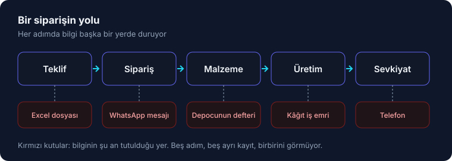
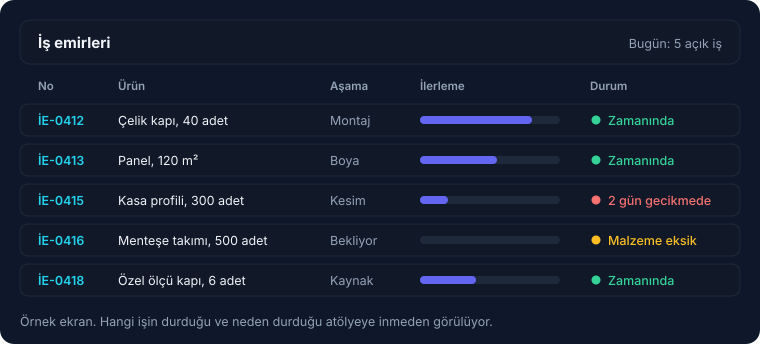

Üretim Yönetimi
Üretim yönetimi yazılımı ne zaman şart olur?
Üretim yapan firmaların çoğu işe Excel, kâğıt iş emri ve bir WhatsApp grubuyla başlar. Beş on sipariş varken bu düzenin bir kusuru yoktur, herkes neyin nerede olduğunu bilir. Sipariş sayısı otuzu, kırkı bulduğunda aynı düzen her gün biraz para kaybettirmeye başlar ve bu kaybı kimse toplayıp önünüze koymaz.

Atölyede tanıdık sahneler
Gezdiğimiz üretim tesislerinde aynı sahneleri tekrar tekrar görüyoruz. Müşteri arayıp siparişini soruyor, satıştaki arkadaş "bir bakıp döneyim" diyor ve atölyeye iniyor. Perşembe sevk edilecek kapıların menteşesi salı günü bitmiş, kimse fark etmemiş. Kesimde hatalı çıkan parçalar bir köşeye ayrılmış ama kaç tane olduğu hiçbir yere yazılmamış.
Planı da genellikle tek kişi bilir, çoğu zaman üretim müdürü ya da en kıdemli usta. O kişi bir hafta izne çıktığında işler yürür ama yavaşlar, çünkü hangi işin öne alınacağına karar verecek başka kimse yoktur.
Bir de fiyat meselesi var. "Bu kapıdan kaç lira kazanıyoruz?" diye sorduğunuzda cevap çoğu firmada geçen yılın fiyatı ve üstüne konan zamdır. Gerçek maliyeti hesaplamak için gereken veri, yani kaç saat işçilik gittiği ve ne kadar malzeme çöpe atıldığı, hiç toplanmamıştır.

Bunun faturası nereye kesiliyor?
Bu sorunların hiçbiri tek başına firmayı zora sokmaz. Zarar, hepsi bir arada yaşandığında birikir.
Geciken teslimat
Geç giden sipariş için bazen ceza ödersiniz, bazen indirim yaparsınız. Daha büyük kayıp sonradan gelir: müşteri bir sonraki işini, verdiği tarihi tutan başka bir firmaya verir ve bunu size söylemez.
Depoda yatan para
Hangi malzemeden ne zaman ne kadar lazım olacağı bilinmeyince satın alma sezgiyle yapılır. Sonuçta depoda altı aylık sac durur ama yarınki iş için gereken vida yoktur. Hat durur, vida şehirdeki ilk nalburdan pazarlıksız alınır.
Yazılmayan fire
Hurdaya giden parça kayda geçmiyorsa, hangi makinede ya da hangi vardiyada sorun olduğunu bilemezsiniz. Ay sonunda malzemenin eksildiğini görürsünüz, sebebini bulamazsınız.
Her şeyin size sorulması
Bilgi bir sistemde durmadığı için en küçük karar bile patrona ya da müdüre gelir. Firma, o bir iki kişinin bir güne sığdırabildiği kadar büyür.
Yazılım burada ne işe yarıyor?
Üretim yönetimi yazılımı dediğimiz şey, yukarıdaki bilgileri tek yerde toplayan bir kayıt düzenidir. Markası ve ekranı değişir ama yaptığı işler aşağı yukarı aynıdır.
Sipariş onaylandığında sistem bunu bir iş emrine çevirir. İş emrinde hangi malzemeden ne kadar gideceği, hangi işlemlerden hangi sırayla geçeceği ve ne zaman teslim edileceği yazılıdır. Bu bilgi bir kere girilir, sonra kâğıda ya da mesaja yeniden yazılmaz.
Operatör işe başlarken ve bitirirken tabletten ya da barkod okuyucudan bir kayıt düşer. Kaç adet çıktı, kaç tanesi hatalıydı, makine neden durdu, hepsi o anda sisteme girer. Akşam birinin formları toplayıp Excel'e geçirmesine gerek kalmaz.

Açık iş emirleri belli olduğu için malzeme ihtiyacı da kendiliğinden çıkar. Menteşenin salı günü biteceğini sistem bir hafta önceden gösterir, satın alma da ona göre sipariş geçer.
Planlama tarafında, hangi makinenin ve hangi ekibin hangi gün dolu olduğu tek ekranda görünür. Yeni bir sipariş geldiğinde teslim tarihini bu ekrana bakarak verirsiniz.
Son olarak maliyet. Harcanan malzeme, geçen süre ve fire iş emrine işlendiği için her siparişin size kaça mal olduğunu görürsünüz. Aşağıdaki örnek abartılı görünebilir ama fire ve fazla mesainin hiç kaydedilmediği firmalarda bu büyüklükte farklar çıkıyor.

"Bizim iş farklı, yazılıma sığmaz"
Bunu neredeyse her görüşmede duyuyoruz ve haksız bir itiraz sayılmaz. Siparişe göre üreten bir firmada her iş birbirinden farklıdır. Seri üretimde asıl dert hızdır. Fason çalışan atölyede malzeme müşterinindir, stok hesabı bambaşka tutulur. Hazır bir paketi alıp hiç dokunmadan kurduğunuzda bu farklar yüzünden sistem kullanılmaz hale gelir.
Biz bu yüzden işe yazılımdan başlamıyoruz. Önce firmada bir siparişin nasıl ilerlediğini çıkarıyoruz, sonra sistemi o akışa göre kuruyoruz. Çalışanlar yazılım öyle istiyor diye iş yapış şeklini değiştirmek zorunda kalıyorsa, kurulumda bir şey yanlış gitmiştir.
Excel ne zaman yetmemeye başlar?
Üç kişilik bir atölyenin ilk günden üretim yazılımına ihtiyacı yok. Bizim gördüğümüz kadarıyla şu durumlardan biri başladığında Excel işi taşıyamıyor:
- Aynı anda yürüyen iş sayısı, bir kişinin aklında tutabileceğini geçtiyse.
- Ürün birkaç aşamadan geçiyor ve aşamalar arasında bekliyorsa.
- Geçen ay kaç siparişin geç gittiğini bilmiyorsanız.
- Malzeme eksiği yüzünden ayda birkaç kez iş duruyorsa.
- İkinci vardiya, ikinci atölye ya da yeni bir ürün grubu gündemdeyse.
Hangi yazılım?
Seçenek çok: geniş kapsamlı ERP sistemleri var, yalnızca üretim sahasına bakan MES çözümleri var, sektöre özel paketler var, bir de firmaya özel yazılan uygulamalar var. Hangisinin uygun olduğu firmanın büyüklüğüne ve ne ürettiğine bağlı.
Biz belli bir ürünü satmaya çalışmıyoruz. Bazı firmalarda uyarlanmış bir ERP kurduk, bazılarında atölyeye özel sade bir uygulama yazdık. Tecrübemiz şu yönde: pahalı ama firmaya uymayan bir sistem, ucuz ama iyi oturtulmuş bir sistemden daha az işe yarıyor.
Nereden başlanır?
İlk iş olarak tek bir siparişi baştan sona takip edin. Teklif nerede yazıldı, sipariş atölyeye nasıl iletildi, malzeme nasıl istendi, sevkiyat nasıl haber verildi? Bilginin kâğıda, mesaja ya da birinin hafızasına geçtiği her noktayı not alın. Çoğu firmada bu liste bir sayfayı bulur.
Sonra listeden canınızı en çok yakan tek maddeyi seçin. Genellikle bu ya iş emri takibidir ya da malzeme ihtiyacı. Her şeyi aynı anda düzeltmeye kalkan projeler yarıda kalıyor.
Seçtiğiniz konuyu önce tek hatta ya da tek ürün grubunda deneyin. Ekip sisteme güvenmeye başladıktan sonra planlamayı, maliyeti ve kaliteyi sırayla eklersiniz.
Sık sorulan sorular
Küçük bir atölye için de gerekli mi?
Beş kişilik bir atölyede bile sipariş ve malzeme takibini düzene sokmak işe yarıyor. Bu ölçekte büyük bir sistem gerekmez, işe göre kurulmuş sade bir düzen yeter.
Ustalar ve operatörler kullanır mı?
Ekran sadeyse kullanırlar. Operatörden çoğu zaman iki dokunuş istenir: işi başlat, işi bitir. Kullanılmayan sistemlerde genellikle sahadaki kişiye ek iş çıkarılmış ama karşılığında işini kolaylaştıran bir şey verilmemiştir.
Kurulum ne kadar sürer?
Kapsama bağlı. Yalnızca iş emri takibini devreye almak birkaç hafta sürer. Planlama, maliyet ve kaliteyi de içine alan bir sistem birkaç ayı bulur. Biz ilk faydanın erken görülmesi için aşama aşama ilerlemeyi tercih ediyoruz.
Mevcut muhasebe programımızla birlikte çalışır mı?
Çoğu durumda çalışır. Üretim sistemi, kullandığınız muhasebe programına veri aktaracak şekilde kurulabilir. Muhasebe programını değiştirmeniz gerekmez.
İşinizi kontrol altına alalım.
Bir siparişinizin yolunu birlikte çıkaralım; nerede zaman ve para kaybettiğinizi görelim.
İletişim bilgileri